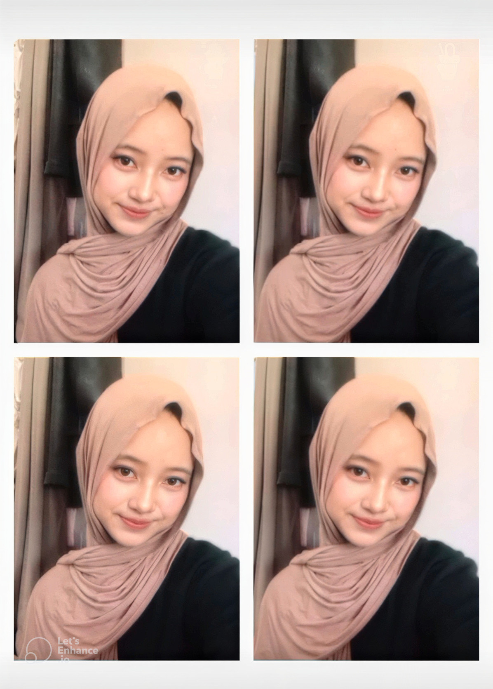
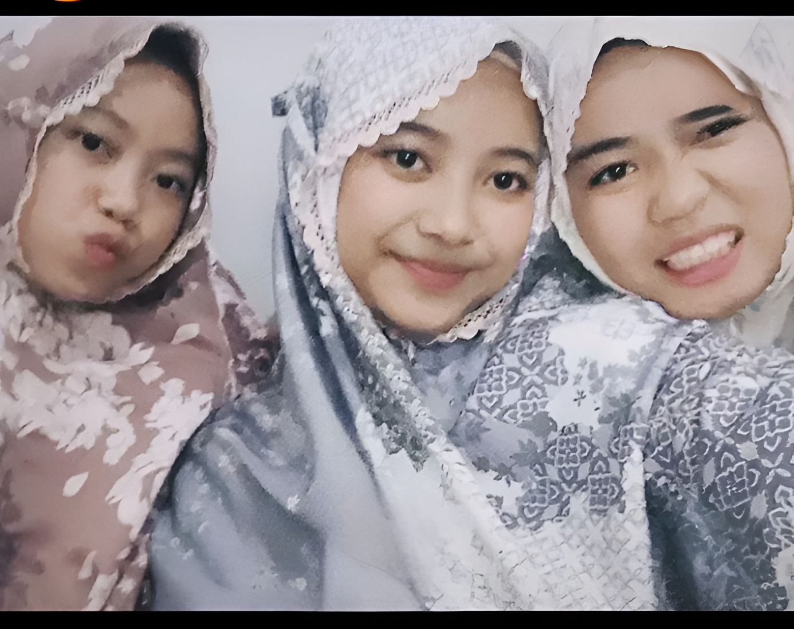
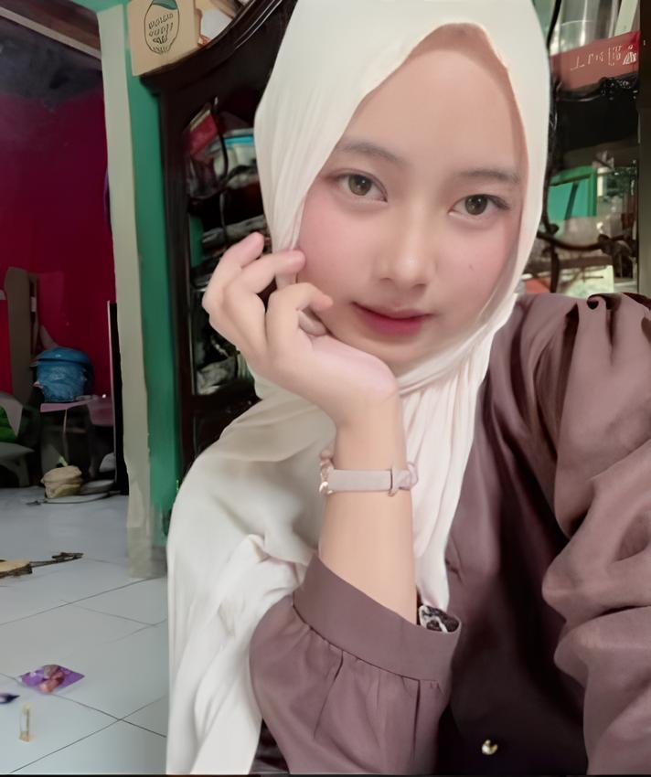
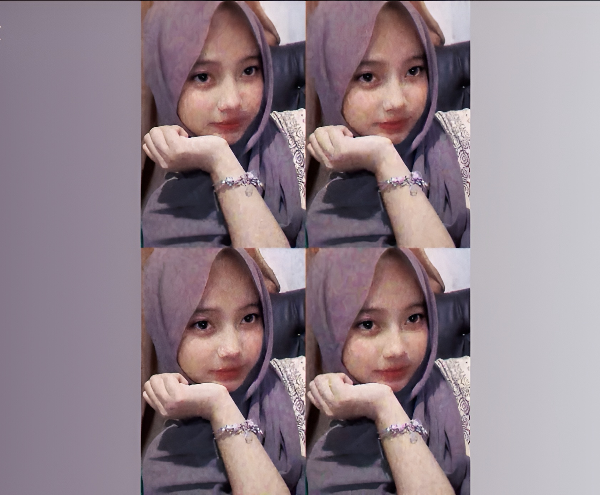
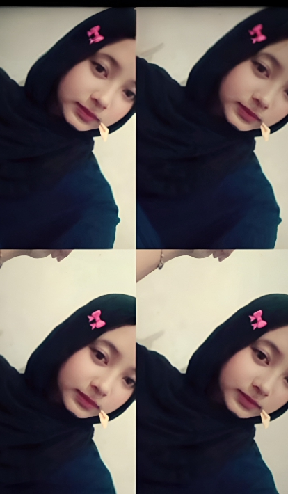

Ada sesuatu yang sudah lama ingin aku sampaikan.





Lampiran : 1 Lembar
Perihal : Ada yang mau dibahas
Surat ini ditujukan Kepada ananda Zahrotunnisa,
Assalamu'alaikum warahmatullahi wabarakatuh.
note : Ma'af klo pesannya pake bahasa baku (soalnya lagi belajar bahasa Indonesia yang baik dan benar🙏)
Kepada teman virtual yang saya hormati, Zahrotunnisa, atau yang biasa saya panggil Saa kadang juga Nisa. Mohon izin meminta sedikit waktumu sebentar Untuk membaca surat yang saya buat ini sampai selesai. Dikarenakan ada beberapa hal yang selama ini ingin saya sampaikan, tetapi belum pernah benar-benar saya ungkapkan
(Walaupun pernah sih pas di tiktok, tapi masi 30% dari ini, jadi aku rinciin lagi).
Pertama-tama, saya ingin membahas tentang hubungan pertemanan kita yang belakangan ini kaya samar² gitu intinya terasa semakin kabur. Itu terjadi karna saya sadar bahwa banyak kesalahan yang saya lakukan sendiri, hingga membuat keadaan menjadi seperti sekarang. Sejujurnya, saya sempat berpikir untuk tidak menulis long text seperti ini lagi, karena saya tahu kepercayaan yang pernah kamu berikan sudah saya rusak berkali-kali.
note : Mau ganti pake bahasa sendiri, soalnya menurut aku yaa, ternyata bahasa baku terlalu profesional, kaya kurang ngena ke hati. (soalnya kan persoalan hati itu harus di seriusin, gabisa di becandain)
(Ekhem.. oke ganti bahasa go)
(jujurly kaya ngerasa gagal jadi laki-laki).
Dan buat semua itu, aku benar-benar ngerasa bersalah saa, yaa walaupun kita cmn temen tapi entah kenapa perasaan aku yakin kalo kita ada hubungan batin yg kuat, soalnya aku juga ngerasa kaya ada sinyal² yg selalu connect ke hati dan pikiran aku, sampe² kebawa mimpi.(note: mau nyoba bahasa baku lagi)
Mungkin bagi sebagian orang ini terdengar berlebihan, karena pada dasarnya... kita hanyalah teman, kaya temenan orang lain pada umumnya. Namun.. entah kenapa, saya selalu merasa bahwa ada ikatan yang sulit dijelaskan antara kita. Namamu sering muncul di pikiran saya, bahkan tanpa sadar sering saya sebut dalam doa.note: ganti my bahasa lagi
Saa, kalopun emang kita gabisa kembali kaya dulu... gpp ko saa. Aku ngerti. Apalagi aku udah bikin banyak masalah ke kehidupan kamu. Maybe, emang sulit buat kamu percaya lagi ke aku. Tapii.. ada satu hal lagi, jujurly, saa... Alesan aku balik lagi dan hadir ke kehidupan kamu, bukan karna aku lagi gabut, bukan juga karna aku lagi butuh seseorang buat diajak chatan. justru aku mau balik lagi karna hati aku gapernah bisa bener-bener tenang waktu aku berusaha buat lupain semuanya, jujurly berat bgt rasanya. Dan... kalaupun suatu saat kamu mutusin buat ga chatan lagi kaya dulu, Aku bakal hargain keputusan itu, kalo itu emang kemauan kamu. Karna buat aku, itu bukan alesan buat aku benci sama kamu atau lupain kamu. Ma'af sebelumnya kalo bagian ini kedengerannya kaya terlalu jauh, tapi jujur aja aku sendiri gabisa boong sa. Aku gapernah nembak kamu sa. Aku juga gapernah ngajak kamu buat pacaran.note: mau ganti bahasa baku biar jadi WNI
Namun saya tidak bisa memungkiri bahwa saya memiliki perasaan yang lebih dari sekadar teman.note :eumm untuk lanjutannya sampe bawah Aku pake bahasa baku (soalnya bagus aja sih bagus kaya di novel²)
eumm... lanjut.
kenapa saya ga mengajak kamu untuk berpacaran?, Karna saya selalu percaya bahwasanya jika memang ada takdir yang baik di antara kita, maka waktulah yang akan mempertemukannya. Dan jika ternyata kamu bukan jodoh saya, saya akan belajar untuk ikhlas, karena saya percaya semua sudah ada yang mengatur, bahkan diatur oleh Allah dengan cara yang terbaik.
Kedua, saya ingin menjelaskan kenapa saya mulai jarang menghubungimu, terutama di hari Jumat.
Mungkin dari sudut pandangmu terlihat seperti... saya hanya datang ketika sedang gabut atau ketika sedang membutuhkanmu saja. Namun... sebenarnya tidak demikian.
Kalau boleh jujur, alasan terbesar saya adalah rasa malu.
Saya merasa sudah terlalu banyak membuat kesalahan terhadapmu. Walaupun kita hanya berteman, saya sering merasa telah menyakitimu lebih dari yang seharusnya. Saya tahu mungkin perasaan itu hanya ada di dalam pikiran saya sendiri, tetapi saya memang tipe orang yang cukup peka terhadap perasaan dan rasa bersalah yang saya rasakan.
Karena itulah saya sering memilih diam. Bukan karena saya tidak peduli. Bukan juga karena saya melupakanmu. Tetapi karena saya takut kalau kehadiran saya justru membuatmu semakin tidak nyaman.
Oke, back to my style language, Makasi yaa udah baca pesannya eh mksdnya thank you for reading pretty girl✨
Ma'af yaa kalo pesannya random atau campur antara bahasa baku dan bahasa aku karna besok aku ujian UKBI jadi harus lancar bahasa Indonesia nya, dan ma'af kalo aku dadakan bgt bikin surat lewat web karna aku keinget kamu trs saa, yaudah aku bikin web aja hhi.
Dengan tulus,
Ardi Dwi Andika